4 Heteroskedasticity and Grouped Data (Random Effects)
In the last chapter, we have discussed how to set up a basic lm, including the selection of predictors according to the purpose of the modelling (prediction, causal analysis). Remember in particular that for a causal analysis, which I consider the standard case in the scineces, first, think about the problem and your question an decide on a base structure. Ideally, you do this by:
- Writing down your scientific questions (e.g. Ozone ~ Wind)
- Then add confounders / mediators if needed.
- Remember to make a difference between variables controlled for confounding, and other confounders (which are typically not controlled for confounding). We may have to use some model selection, but in fact with a good analysis plan this is rarely necessary for a causal analysis.
After having arrived at such a base structure, we will have to check if the model is appropriate for the analysis. Yesterday, we already discussed about residual checks and we discussed that the 4 standard residual plots check for 4 different problems.
- Residuals vs Fitted = Functional relationship.
- Normal Q-Q = Normality of residuals.
- Scale - Location = Variance homogeneity.
- Residuals vs Leverage = Should we worry about certain outliers?
Here an example for a linear regression of Ozone against Wind:
fit = lm(Ozone ~ Temp , data = airquality)
plot(Ozone ~ Temp, data = airquality)
abline(fit)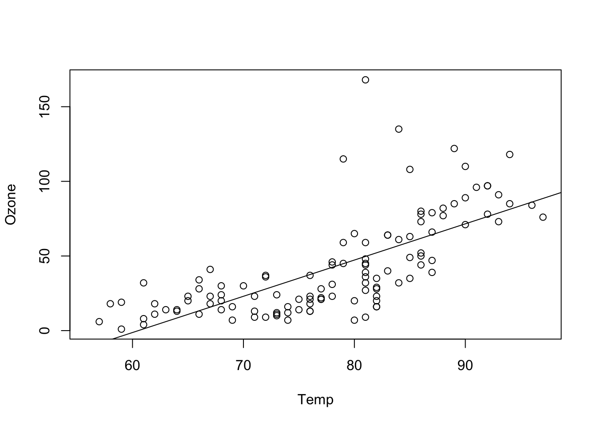
par(mfrow = c(2, 2))
plot(fit)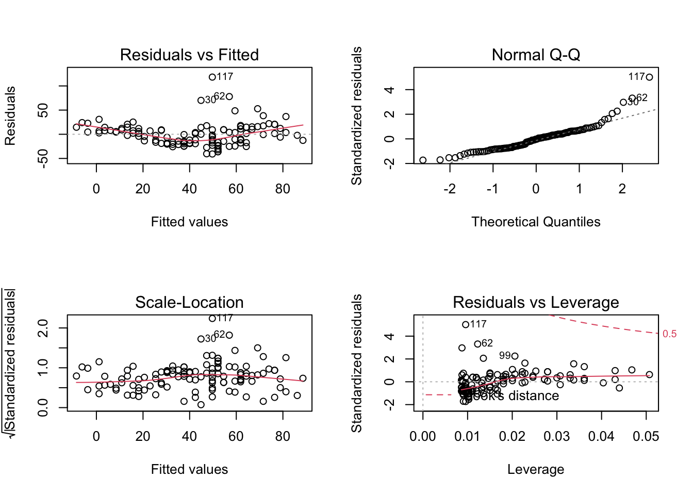
The usual strategy now is to
- First get the functional relationship right, so that the model correctly describe the mean
- Then adjust the model assumptions regardigng distribution, variance and outliers.
We will go through these steps now, and on the way also learn how to deal with heteroskedasticity, outliers, weird distributions and grouped data (random or mixed models).
4.1 Adjusting the Functional Form
In the residual ~ fitted plot above, we can clearly see a pattern, which means that our model has a systematic misfit. Note that in a multiple regression, you should also check res ~ predictor for all predictors, because patterns of misfit often show up more clearly when plotted against the single predictors.
What should we do if we see a pattern? Here a few strategies that you might want to consider:
4.1.1 Changing the regression formular
The easiest strategy is to add complexity to the polynomial, e.g. quadratic terms, interactions etc.
library(effects)
fit = lm(Ozone ~ Wind * Temp + I(Wind^2) + I(Temp^2), data = airquality)
plot(allEffects(fit, partial.residuals = T), selection = 1)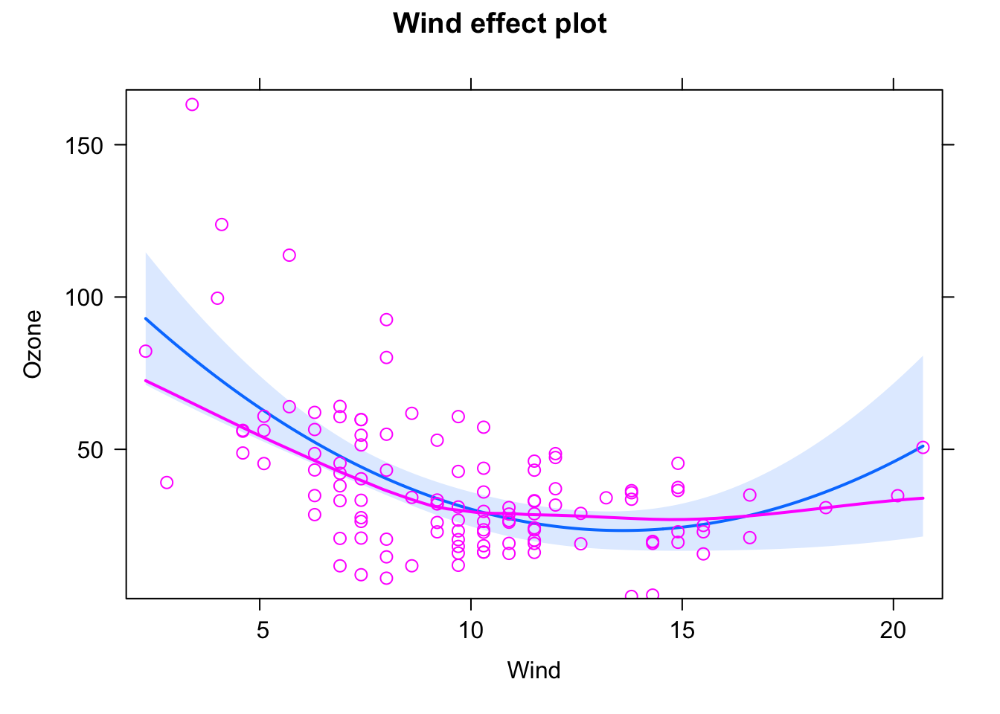
plot(allEffects(fit, partial.residuals = T), selection = 2)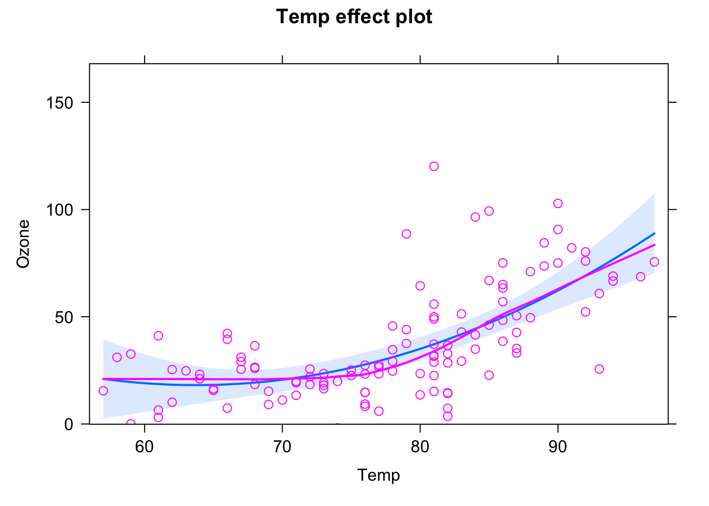
plot(allEffects(fit, partial.residuals = T), selection = 3)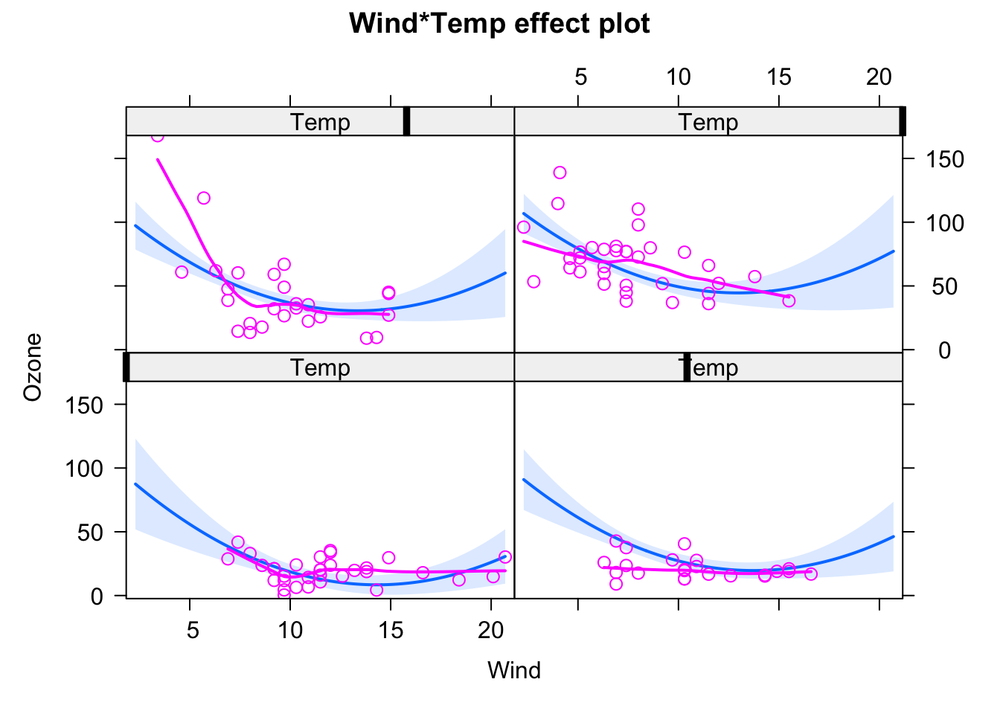
and see if the residuals are getting better. To avoid doing this totally randomly, it may be useful to plot residuals against individual predictors by hand!
4.1.2 Generalized additive models (GAMs)
Another options are GAMs = Generalized Additive Models. The idea is to fit a smooth function to data, to automatically find the “right” functional form. The smoothness of the function is automatically optimized.
library(mgcv)
fit = gam(Ozone ~ s(Wind) + s(Temp) + s(Solar.R) , data = airquality)
summary(fit)##
## Family: gaussian
## Link function: identity
##
## Formula:
## Ozone ~ s(Wind) + s(Temp) + s(Solar.R)
##
## Parametric coefficients:
## Estimate Std. Error t value Pr(>|t|)
## (Intercept) 42.099 1.663 25.32 <2e-16 ***
## ---
## Signif. codes: 0 '***' 0.001 '**' 0.01 '*' 0.05 '.' 0.1 ' ' 1
##
## Approximate significance of smooth terms:
## edf Ref.df F p-value
## s(Wind) 2.910 3.657 13.695 < 2e-16 ***
## s(Temp) 3.833 4.753 11.613 < 2e-16 ***
## s(Solar.R) 2.760 3.447 3.967 0.00858 **
## ---
## Signif. codes: 0 '***' 0.001 '**' 0.01 '*' 0.05 '.' 0.1 ' ' 1
##
## R-sq.(adj) = 0.723 Deviance explained = 74.7%
## GCV = 338.9 Scale est. = 306.83 n = 111# allEffects doesn't work here.
plot(fit, pages = 0, residuals = T, pch = 20, lwd = 1.8, cex = 0.7,
col = c("black", rep("red", length(fit$residuals))))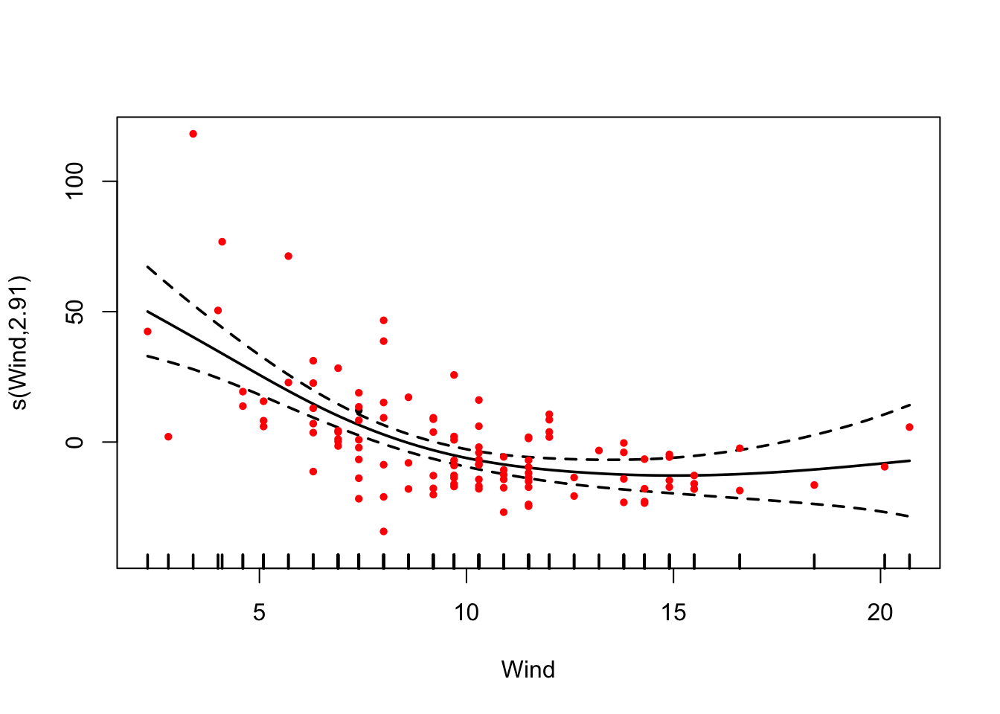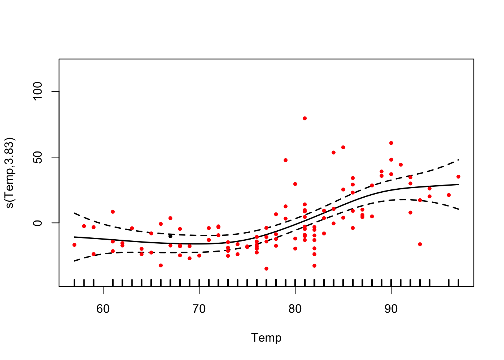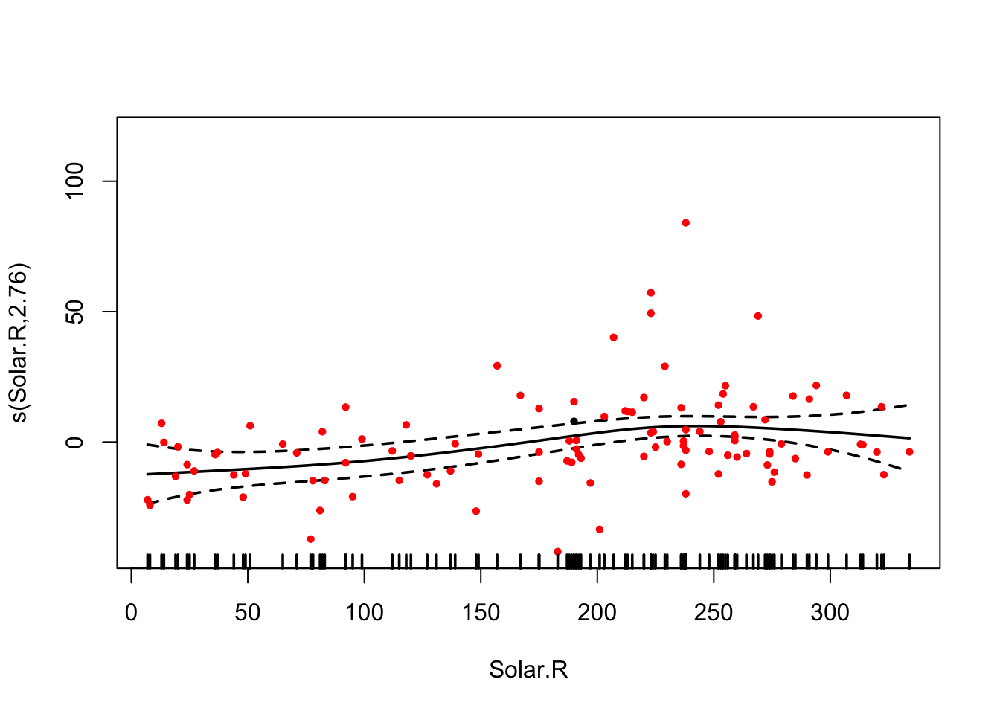
AIC(fit)## [1] 962.596Comparison to normal lm():
fit = lm(Ozone ~ Wind + Temp + Solar.R , data = airquality)
AIC(fit)## [1] 998.7171Spline interaction is called a tensor spline:
fit = gam(Ozone ~ te(Wind, Temp) + s(Solar.R) , data = airquality)
summary(fit)##
## Family: gaussian
## Link function: identity
##
## Formula:
## Ozone ~ te(Wind, Temp) + s(Solar.R)
##
## Parametric coefficients:
## Estimate Std. Error t value Pr(>|t|)
## (Intercept) 42.099 1.403 30 <2e-16 ***
## ---
## Signif. codes: 0 '***' 0.001 '**' 0.01 '*' 0.05 '.' 0.1 ' ' 1
##
## Approximate significance of smooth terms:
## edf Ref.df F p-value
## te(Wind,Temp) 13.176 14.87 22.151 <2e-16 ***
## s(Solar.R) 2.822 3.52 3.177 0.0237 *
## ---
## Signif. codes: 0 '***' 0.001 '**' 0.01 '*' 0.05 '.' 0.1 ' ' 1
##
## R-sq.(adj) = 0.803 Deviance explained = 83.1%
## GCV = 258.06 Scale est. = 218.54 n = 111plot(fit, pages = 0, residuals = T, pch = 20, lwd = 1.9, cex = 0.4)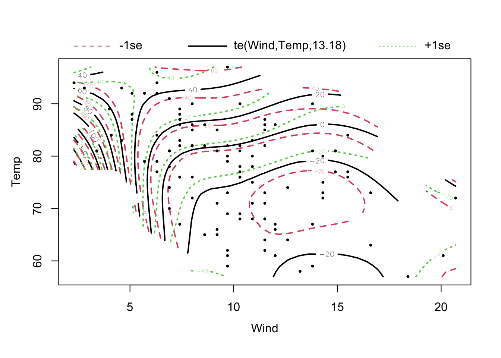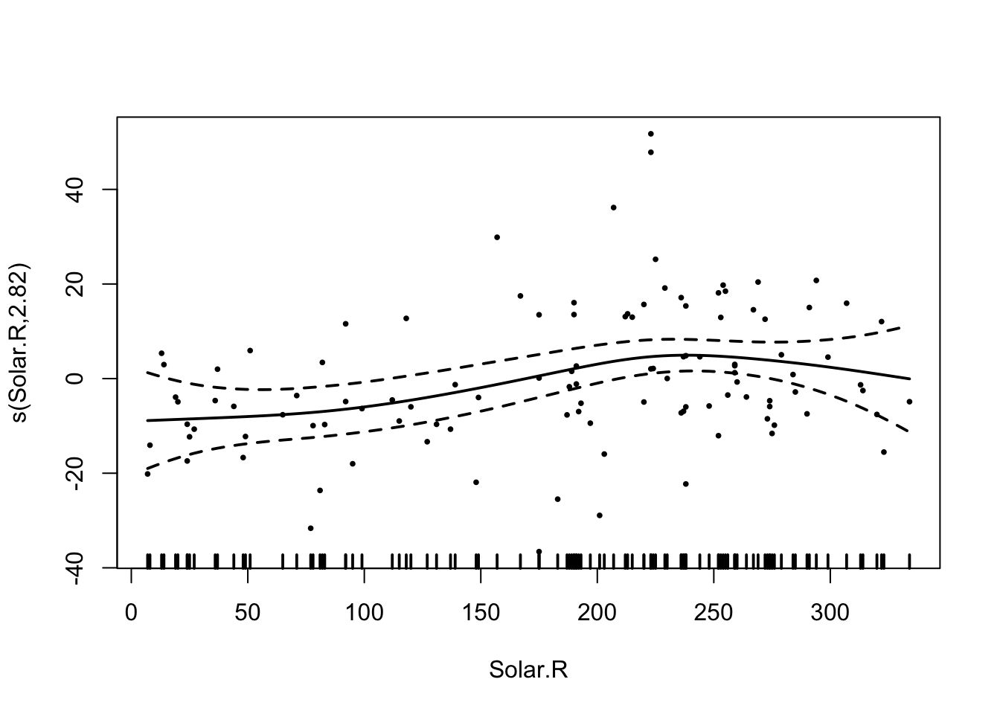
AIC(fit)## [1] 930.5047GAMs are particularly useful for confounders. If you have confounders, you usually don’t care that the fitted relationship is a bit hard to interpret, you just want the confounder effect to be removed. So, if you want to fit the causal relationship between Ozone ~ Wind, account for the other variables, a good strategy might be:
fit = gam(Ozone ~ Wind + s(Temp) + s(Solar.R) , data = airquality)
summary(fit)##
## Family: gaussian
## Link function: identity
##
## Formula:
## Ozone ~ Wind + s(Temp) + s(Solar.R)
##
## Parametric coefficients:
## Estimate Std. Error t value Pr(>|t|)
## (Intercept) 72.2181 6.3166 11.433 < 2e-16 ***
## Wind -3.0302 0.6082 -4.982 2.55e-06 ***
## ---
## Signif. codes: 0 '***' 0.001 '**' 0.01 '*' 0.05 '.' 0.1 ' ' 1
##
## Approximate significance of smooth terms:
## edf Ref.df F p-value
## s(Temp) 3.358 4.184 14.972 <2e-16 ***
## s(Solar.R) 2.843 3.551 3.721 0.0115 *
## ---
## Signif. codes: 0 '***' 0.001 '**' 0.01 '*' 0.05 '.' 0.1 ' ' 1
##
## R-sq.(adj) = 0.664 Deviance explained = 68.6%
## GCV = 402.11 Scale est. = 372.4 n = 111In this way, you still get a nicely interpretable linear effect for Wind, but you don’t have to worry about the functional form of the other predictors.
4.2 Modelling Variance Terms
After we have fixed the functional form, we want to look at the distribution of the residuals. We said yesterday that you can try to get them more normal by applying an appropriate transformation, e.g. the logarithm or square root. Without transformation, we often find that data shows heteroskedasticity, i.e. the residual variance changes with some predictor or the mean estimate (see also Scale - Location plot). Maybe your experimental data looks like this:
set.seed(125)
data = data.frame(treatment = factor(rep(c("A", "B", "C"), each = 15)))
data$observation = c(7, 2 ,4)[as.numeric(data$treatment)] +
rnorm( length(data$treatment), sd = as.numeric(data$treatment)^2 )
boxplot(observation ~ treatment, data = data)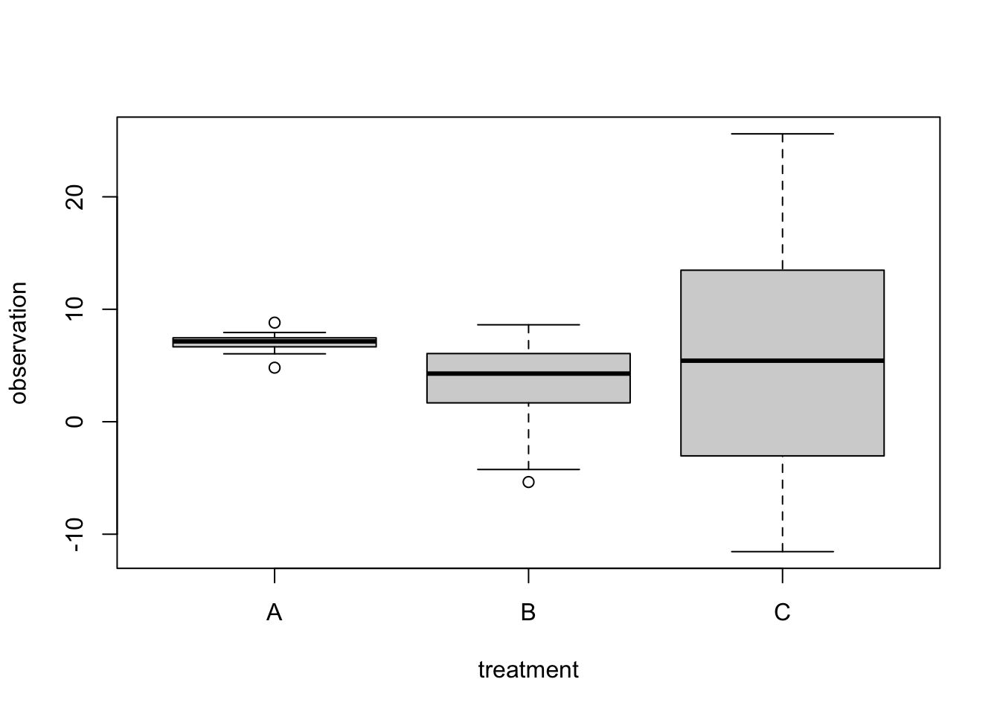
Especially p-values and confidence intervals of lm() and ANOVA can react quite strongly to such differences in residual variation. So, running a standard lm() / ANOVA on this data is not a good idea - in this case, we see that all regression effects are not significant, as is the ANOVA, suggesting that there is no difference between groups.
fit = lm(observation ~ treatment, data = data)
summary(fit)##
## Call:
## lm(formula = observation ~ treatment, data = data)
##
## Residuals:
## Min 1Q Median 3Q Max
## -17.2897 -1.0514 0.3531 2.4465 19.8602
##
## Coefficients:
## Estimate Std. Error t value Pr(>|t|)
## (Intercept) 7.043 1.731 4.069 0.000204 ***
## treatmentB -3.925 2.448 -1.603 0.116338
## treatmentC -1.302 2.448 -0.532 0.597601
## ---
## Signif. codes: 0 '***' 0.001 '**' 0.01 '*' 0.05 '.' 0.1 ' ' 1
##
## Residual standard error: 6.704 on 42 degrees of freedom
## Multiple R-squared: 0.05973, Adjusted R-squared: 0.01495
## F-statistic: 1.334 on 2 and 42 DF, p-value: 0.2744summary(aov(fit))## Df Sum Sq Mean Sq F value Pr(>F)
## treatment 2 119.9 59.95 1.334 0.274
## Residuals 42 1887.6 44.94So, what can we do?
4.2.1 Transformation
One option is to search for a transformation of the response that improves the problem - If heteroskedasticity correlates with the mean value, one can typically decrease it by some sqrt or log transformation, but often difficult, because this may also conflict with keeping the distribution normal.
4.2.2 Model the variance
The second, more general option, is to model the variance - Modelling the variance to fit a model where the variance is not fixed. The basic option in R is nlme::gls. GLS = Generalized Least Squares. In this function, you can specify a dependency of the residual variance on a predictor or the response. See options via ?varFunc. In our case, we will use the varIdent option, which allows to specify a different variance per treatment.
library(nlme)
fit = gls(observation ~ treatment, data = data, weights = varIdent(form = ~ 1 | treatment))
summary(fit)## Generalized least squares fit by REML
## Model: observation ~ treatment
## Data: data
## AIC BIC logLik
## 243.9258 254.3519 -115.9629
##
## Variance function:
## Structure: Different standard deviations per stratum
## Formula: ~1 | treatment
## Parameter estimates:
## A B C
## 1.000000 4.714512 11.821868
##
## Coefficients:
## Value Std.Error t-value p-value
## (Intercept) 7.042667 0.2348387 29.989388 0.0000
## treatmentB -3.925011 1.1317816 -3.467994 0.0012
## treatmentC -1.302030 2.7861462 -0.467323 0.6427
##
## Correlation:
## (Intr) trtmnB
## treatmentB -0.207
## treatmentC -0.084 0.017
##
## Standardized residuals:
## Min Q1 Med Q3 Max
## -2.4587934 -0.6241702 0.1687727 0.6524558 1.9480169
##
## Residual standard error: 0.9095262
## Degrees of freedom: 45 total; 42 residualIf you check the ANOVA, also the ANOVA is significant!
anova(fit)## Denom. DF: 42
## numDF F-value p-value
## (Intercept) 1 899.3761 <.0001
## treatment 2 6.0962 0.0047The second option for modeling variances is to use the glmmTMB.{R} package, which we will use quite frequently this week. Here, you can specify an extra regression formula for the dispersion (= residual variance). If we fit this:
library(glmmTMB)
fit = glmmTMB(observation ~ treatment, data = data, dispformula = ~ treatment)We get 2 regression tables as outputs - one for the effects, and one for the dispersion (= residual variance). We see, as expected, that the dispersion is higher in groups B and C compared to A. An advantage over gls is that we get confidence intervals and p-values for these differences on top!
summary(fit)## Family: gaussian ( identity )
## Formula: observation ~ treatment
## Dispersion: ~treatment
## Data: data
##
## AIC BIC logLik deviance df.resid
## 248.7 259.5 -118.3 236.7 39
##
##
## Conditional model:
## Estimate Std. Error z value Pr(>|z|)
## (Intercept) 7.0427 0.2269 31.042 < 2e-16 ***
## treatmentB -3.9250 1.0934 -3.590 0.000331 ***
## treatmentC -1.3020 2.6917 -0.484 0.628582
## ---
## Signif. codes: 0 '***' 0.001 '**' 0.01 '*' 0.05 '.' 0.1 ' ' 1
##
## Dispersion model:
## Estimate Std. Error z value Pr(>|z|)
## (Intercept) -0.2587 0.3651 -0.708 0.479
## treatmentB 3.1013 0.5164 6.006 1.91e-09 ***
## treatmentC 4.9399 0.5164 9.566 < 2e-16 ***
## ---
## Signif. codes: 0 '***' 0.001 '**' 0.01 '*' 0.05 '.' 0.1 ' ' 14.2.3 Exercise variance modelling
Take this plot of Ozone ~ Solar.R using the airquality data. Clearly there is heteroskedasticity in the relationship:
plot(Ozone ~ Solar.R, data = airquality)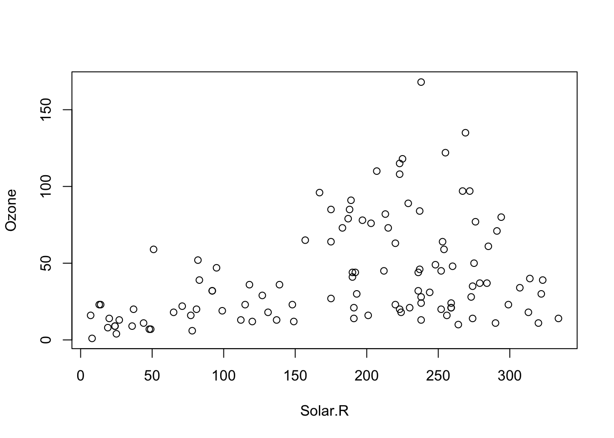
We can also see this when we fit the regression model:
m1 = lm(Ozone ~ Solar.R, data = airquality)
par(mfrow = c(2, 2))
plot(m1)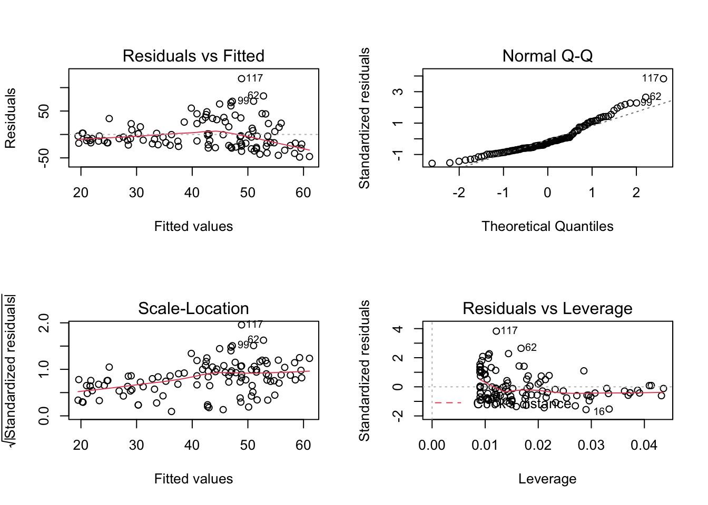
Task
We could of course consider other predictors, but let’s say we want to fit this model specifically
- Try to get the variance stable with a transformation.
- Use the
glsfunction (packagenlme) with the untransformed response to make the variance dependent on Solar.R. Hint: Read invarClasses.{R} and decide how to model this. - Use
glmmTMB.{R} to model heteroskedasticity.
Solution
4.3 Non-normality and Outliers
What can we do if, after accounting for the functional relationship, response transformation and variance modelling, residual diagnostic 2 shows non-normality, in particular strong outliers? Here simulated example data with strong outliers / deviations from normality:
set.seed(123)
n = 100
concentration = runif(n, -1, 1)
growth = 2 * concentration + rnorm(n, sd = 0.5) +
rbinom(n, 1, 0.05) * rnorm(n, mean = 6*concentration, sd = 6)
plot(growth ~ concentration)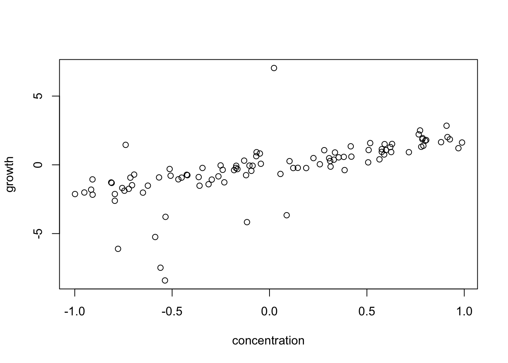
Fitting the model, we see that the distribution is to wide:
fit = lm(growth ~ concentration)
par(mfrow = c(2, 2))
plot(fit)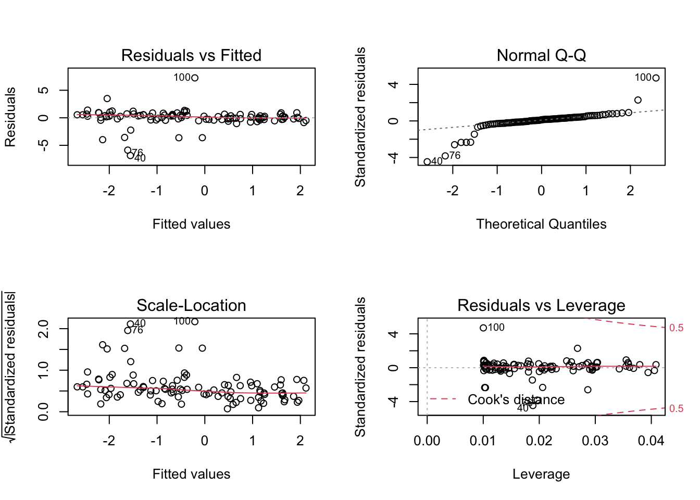
What can we do to deal with such distributional problems and outliers?
- Removing - Bad option, hard to defend, reviewers don’t like this - if at all, better show robustness with and without outlier, but result is sometimes not robust.
- Change the distribution - Fit a model with a different distribution, i.e. GLM or other. -> We will do this on Wednesday.
- Robust regressions.
- Quantile regression - A special type of regression that does not assume a particular residual distribution.
Change distribution
If we want to change the distribution, we have to go to a GLM, see Wednesday.
Robust regression
Robust methods generally refer to methods that are robust to violation of assumptions, e.g. outliers. More specifically, standard robust regressions typically downweight datap oints that have a too high influence on the fit. See https://cran.r-project.org/web/views/Robust.html for a list of robust packages in R.
# This is the classic method.
library(MASS)
fit = rlm(growth ~ concentration)
summary(fit)##
## Call: rlm(formula = growth ~ concentration)
## Residuals:
## Min 1Q Median 3Q Max
## -7.1986 -0.3724 0.0377 0.3391 7.0902
##
## Coefficients:
## Value Std. Error t value
## (Intercept) -0.0978 0.0594 -1.6453
## concentration 2.0724 0.1048 19.7721
##
## Residual standard error: 0.534 on 98 degrees of freedom# No p-values and not sure if we can trust the confidence intervals.
# Would need to boostrap by hand!
# This is another option that gives us p-values directly.
library(robustbase)## Warning: package 'robustbase' was built under R version 4.1.1##
## Attaching package: 'robustbase'## The following object is masked from 'package:survival':
##
## heartfit = lmrob(growth ~ concentration)
summary(fit)##
## Call:
## lmrob(formula = growth ~ concentration)
## \--> method = "MM"
## Residuals:
## Min 1Q Median 3Q Max
## -7.2877 -0.4311 -0.0654 0.2788 7.0384
##
## Coefficients:
## Estimate Std. Error t value Pr(>|t|)
## (Intercept) -0.04448 0.05160 -0.862 0.391
## concentration 2.00588 0.08731 22.974 <2e-16 ***
## ---
## Signif. codes: 0 '***' 0.001 '**' 0.01 '*' 0.05 '.' 0.1 ' ' 1
##
## Robust residual standard error: 0.5549
## Multiple R-squared: 0.8431, Adjusted R-squared: 0.8415
## Convergence in 7 IRWLS iterations
##
## Robustness weights:
## 9 observations c(27,40,47,52,56,76,80,91,100)
## are outliers with |weight| = 0 ( < 0.001);
## 5 weights are ~= 1. The remaining 86 ones are summarized as
## Min. 1st Qu. Median Mean 3rd Qu. Max.
## 0.6673 0.9015 0.9703 0.9318 0.9914 0.9989
## Algorithmic parameters:
## tuning.chi bb tuning.psi refine.tol
## 1.548e+00 5.000e-01 4.685e+00 1.000e-07
## rel.tol scale.tol solve.tol eps.outlier
## 1.000e-07 1.000e-10 1.000e-07 1.000e-03
## eps.x warn.limit.reject warn.limit.meanrw
## 1.819e-12 5.000e-01 5.000e-01
## nResample max.it best.r.s k.fast.s k.max
## 500 50 2 1 200
## maxit.scale trace.lev mts compute.rd fast.s.large.n
## 200 0 1000 0 2000
## psi subsampling cov
## "bisquare" "nonsingular" ".vcov.avar1"
## compute.outlier.stats
## "SM"
## seed : int(0)Quantile regression
Quantile regressions don’t fit a line with an error spreading around it, but try to fit a quantile (e.g. the 0.5 quantile, the median) regardless of the distribution. Thus, they work even if the usual assumptions don’t hold.
library(qgam)
dat = data.frame(growth = growth, concentration = concentration)
fit = qgam(growth ~ concentration, data = dat, qu = 0.5) ## Estimating learning rate. Each dot corresponds to a loss evaluation.
## qu = 0.5................donesummary(fit)##
## Family: elf
## Link function: identity
##
## Formula:
## growth ~ concentration
##
## Parametric coefficients:
## Estimate Std. Error z value Pr(>|z|)
## (Intercept) -0.08167 0.05823 -1.403 0.161
## concentration 2.04781 0.09500 21.556 <2e-16 ***
## ---
## Signif. codes: 0 '***' 0.001 '**' 0.01 '*' 0.05 '.' 0.1 ' ' 1
##
##
## R-sq.(adj) = 0.427 Deviance explained = 48.8%
## -REML = 157.82 Scale est. = 1 n = 100Summary
Actions on real outliers:
- Robust regression.
- Remove
Actions on different distributions:
- Transform.
- Change distribution or quantile regression.
4.4 Random and Mixed Effects - Motivation
Random effects are a very common addition to regression models that can be used for any type of grouping (categorical) variable. Lets look at the Month in airquality:
airquality$fMonth = as.factor(airquality$Month)Let’s say further that we are only interested in calculating the mean of Ozone:
fit = lm(Ozone ~ 1, data = airquality)Problem: If we fit residuals, we see that they are correlated in Month, so we somehow have to account for Month:
plot(residuals(fit) ~ airquality$fMonth[as.numeric(row.names(model.frame(fit)))])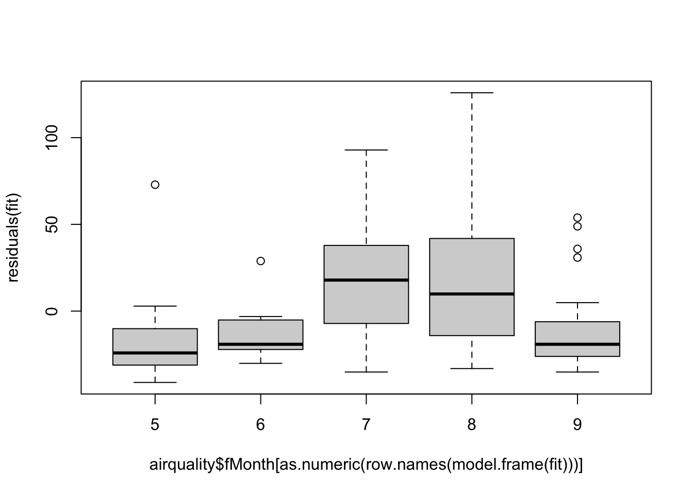
A fixed effect model for fMonth would be
fit = lm(Ozone ~ fMonth, data = airquality)
summary(fit)##
## Call:
## lm(formula = Ozone ~ fMonth, data = airquality)
##
## Residuals:
## Min 1Q Median 3Q Max
## -52.115 -16.823 -7.282 13.125 108.038
##
## Coefficients:
## Estimate Std. Error t value Pr(>|t|)
## (Intercept) 23.615 5.759 4.101 7.87e-05 ***
## fMonth6 5.829 11.356 0.513 0.609
## fMonth7 35.500 8.144 4.359 2.93e-05 ***
## fMonth8 36.346 8.144 4.463 1.95e-05 ***
## fMonth9 7.833 7.931 0.988 0.325
## ---
## Signif. codes: 0 '***' 0.001 '**' 0.01 '*' 0.05 '.' 0.1 ' ' 1
##
## Residual standard error: 29.36 on 111 degrees of freedom
## (37 observations deleted due to missingness)
## Multiple R-squared: 0.2352, Adjusted R-squared: 0.2077
## F-statistic: 8.536 on 4 and 111 DF, p-value: 4.827e-06However, using a fixed effect costs a lot of degrees of freedom, and maybe we are not really interested in Month, we just want to correct the correlation in the residuals.
Solution: Mixed / random effect models. In a mixed model, we assume (differently to a fixed effect model) that the effect of Month is coming from a normal distribution. In a way, you could say that there are two types of errors:
The random effect, which is a normal “error” per group (in this case Month).
And the residual error, which comes on top of the random effect.
Because of this hierarchical structure, these models are also called “multi-level models” or “hierarchical models”. Nomenclature:
- No random effect = Fixed effect model.
- Only random effects + intercept = Random effect model.
- Random effects + fixed effects = Mixed model.
Because grouping naturally occurs in any type of experimental data (batches, blocks, etc.), mixed effect models are the de-facto default for most experimental data! Mind, that grouping even occurs for example, when 2 different persons gather information.
4.4.1 Fitting Random Effects Models
To speak about random effects, we will use an example data set containing exam scores of 4,059 students from 65 schools in Inner London. This data set is located in the R package mlmRev.{R}.
- Response: “normexam” (Normalized exam score).
- Predictor 1: “standLRT” (Standardised LR test score; Reading test taken when they were 11 years old).
- Predictor 2: “sex” of the student (F / M).
If we analyze this with a simple lm, we get the following response:
library(mlmRev)
library(effects)
mod0 = lm(normexam ~ standLRT + sex , data = Exam)
plot(allEffects(mod0))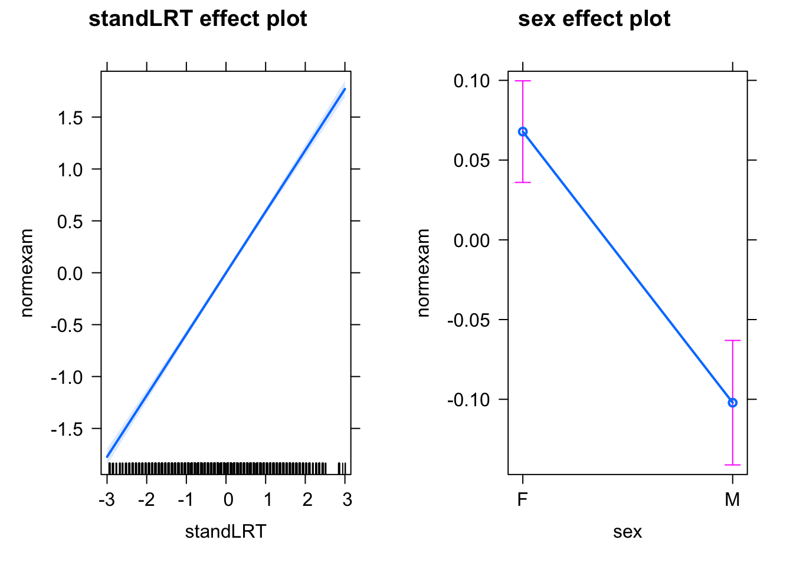
Random intercept model
A random intercept model assumes that each school gets their own intercept. It’s pretty much identical to the fixed effect model lm(normexam ~ standLRT + sex + school), except that instead of giving each school a separate independent intercept, we assume that the school effects come from a common normal distribution.
mod1 = lmer(normexam ~ standLRT + sex + (1 | school), data = Exam)
summary(mod1)## Linear mixed model fit by REML ['lmerMod']
## Formula: normexam ~ standLRT + sex + (1 | school)
## Data: Exam
##
## REML criterion at convergence: 9346.6
##
## Scaled residuals:
## Min 1Q Median 3Q Max
## -3.7120 -0.6314 0.0166 0.6855 3.2735
##
## Random effects:
## Groups Name Variance Std.Dev.
## school (Intercept) 0.08986 0.2998
## Residual 0.56252 0.7500
## Number of obs: 4059, groups: school, 65
##
## Fixed effects:
## Estimate Std. Error t value
## (Intercept) 0.07639 0.04202 1.818
## standLRT 0.55947 0.01245 44.930
## sexM -0.17136 0.03279 -5.226
##
## Correlation of Fixed Effects:
## (Intr) stnLRT
## standLRT -0.013
## sexM -0.337 0.061If we look at the outputs, we see that the effects of school are not explicitly mentioned, i.e. we fit an average over the schools. This is also because we treat the random effects as error rather than as estimates.
However, the school mean effects are estimated, and we can make them visible, e.g. via:
with(Exam, {
randcoef = ranef(mod1)$school[,1]
fixedcoef = fixef(mod1)
plot(standLRT, normexam)
for(i in 1:65){
abline(a = fixedcoef[1] + randcoef[i], b = fixedcoef[2], col = i)
}
})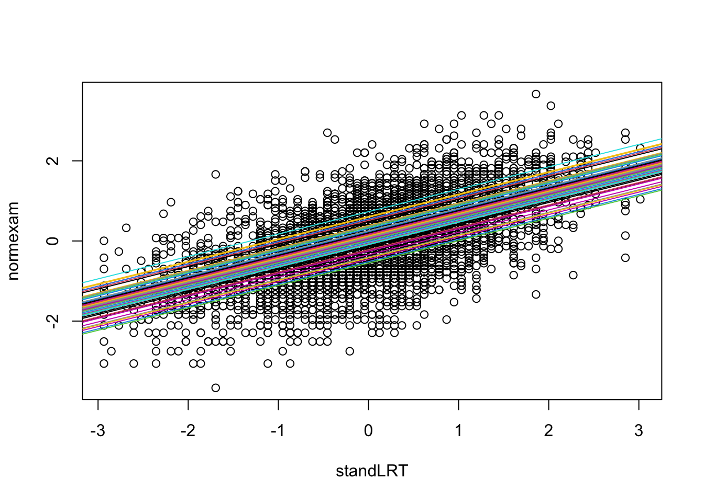
Random slope model
A random slope model assumes that each school also gets their own slope for a given parameter (per default we will always estimate slope and intercept, but you could overwrite this, not recommended!). Let’s do this for standLRT (you could of course do both as well).
mod2 = lmer(normexam ~ standLRT + sex + (standLRT | school), data = Exam)
summary(mod2)## Linear mixed model fit by REML ['lmerMod']
## Formula: normexam ~ standLRT + sex + (standLRT | school)
## Data: Exam
##
## REML criterion at convergence: 9303.2
##
## Scaled residuals:
## Min 1Q Median 3Q Max
## -3.8339 -0.6373 0.0245 0.6819 3.4500
##
## Random effects:
## Groups Name Variance Std.Dev. Corr
## school (Intercept) 0.08795 0.2966
## standLRT 0.01514 0.1230 0.53
## Residual 0.55019 0.7417
## Number of obs: 4059, groups: school, 65
##
## Fixed effects:
## Estimate Std. Error t value
## (Intercept) 0.06389 0.04167 1.533
## standLRT 0.55275 0.02016 27.420
## sexM -0.17576 0.03228 -5.445
##
## Correlation of Fixed Effects:
## (Intr) stnLRT
## standLRT 0.356
## sexM -0.334 0.036Fitting a random slope on standLRT is pretty much identical to fit the fixed effect model
lm(normexam ~ standLRT*school + sex), except that school is a random effect, and therefore parameter estimates for the interaction sex:school are not independent. The results is similar to the random intercept model, except that we have an additional variance term.
Here a visualization of the results
with(Exam, {
randcoefI = ranef(mod2)$school[,1]
randcoefS = ranef(mod2)$school[,2]
fixedcoef = fixef(mod2)
plot(standLRT, normexam)
for(i in 1:65){
abline(a = fixedcoef[1] + randcoefI[i] , b = fixedcoef[2] + randcoefS[i], col = i)
}
})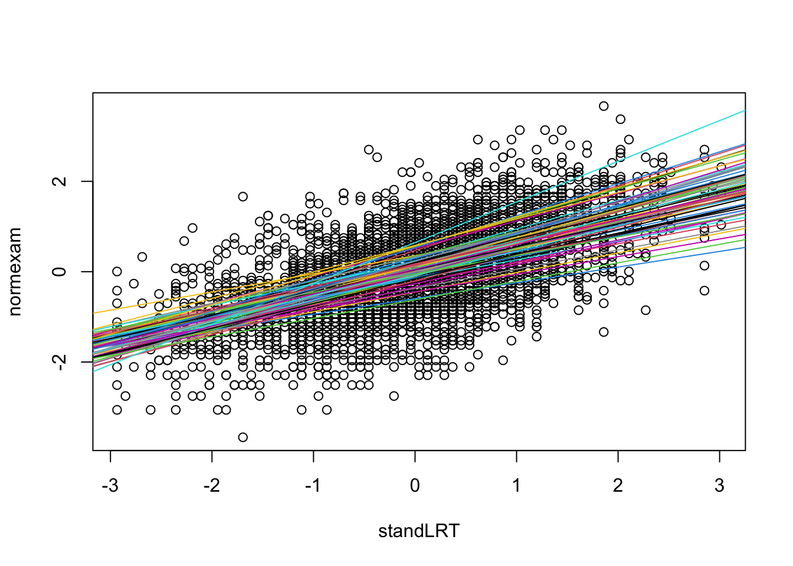
Syntax cheat sheet:
- Random intercept: `(1 | group).
- ONLY random slope for a given fixed effect:
(0 + fixedEffect | group). - Random slope + intercept + correlation (default):
(fixedEffect | group). - Random slope + intercept without correlation:
(fixedEffect || group), identical to
(1 | group) + (0 + fixedEffect | group). - Nested random effects:
(1 | group / subgroup). If groups are labeled A, B, C, … and subgroups 1, 2, 3, …, this will create labels A1, A2 ,B1, B2, so that you effectively group in subgroups. Useful for the many experimental people that do not label subgroups uniquely, but otherwise no statistical difference to a normal random effect. - Crossed random effects: You can add random effects independently, as in
(1 | group1) + (1 | group2).
4.4.2 Task: a mixed model for plantHeight
Task
Take our old plantHeight dataset that we worked with already a lot. Consider that the relationship height ~ temp may be different for each family. Some families may have larger plants in general (random intercept), but it may also be that the temperature relationship changes per family. Thus, you could include family as random intercept + slope in this relationship. Specify the model and run it!
Solution
oldModel <- lm(loght ~ temp, data = plantHeight)
summary(oldModel)
# Stragegy: if you have a grouping factor, add a random intercept
# check additionally for random slope
randomInterceptModel <- lmer(loght ~ temp + (1|Family), data = plantHeight)
summary(randomInterceptModel)
# if I count sd = 1 paramter more
# if I count the REs, 69 parameters more
# solution: depends on the sd estimate -> wide sd, loose nearly 69df, narrow sd = loose nothing except the sd estimate -> flexibility of an random effect model is adoptiv (not fixed)
fixedInterceptModel <- lm(loght ~ temp + Family, data = plantHeight)
summary(fixedInterceptModel)
# loose 69 degrees of freedom -> this model has 69 parameters more to fit than the model loght ~ temp, loose a lot of power
randomSlopeModel <- lmer(loght ~ temp + (temp | Family), data = plantHeight)
summary(randomSlopeModel)
# scaling helps the optimizer
plantHeight$sTemp = scale(plantHeight$temp)
randomSlopeModel <- lmer(loght ~ sTemp + (sTemp | Family), data = plantHeight)
summary(randomSlopeModel)
# fixed effect model has no significance any more
fixedSlopeInterceptModel <- lm(loght ~ temp * Family, data = plantHeight)
summary(fixedSlopeInterceptModel)
summary(aov(fixedSlopeInterceptModel))4.4.3 Problems With Mixed Models
Specifying mixed models is quite simple, however, there is a large list of (partly quite complicate) issues in their practical application. Here, a (incomplete) list:
Interpretation of random effects
What do the random effects mean? The classical interpretation of the rando intercept is that they are a group-structured error, i.e. they are like residuals, but for an entire group.
However, this view breaks down a bit for a random slope model. Another way to view this is that the RE terms absorb variation in parameters. This view works for random intercept and slope models. So, our main model fits the grand mean, and the RE models variation in the parameters, which is assumed to be normally distributed.
A third view of RE models is that they are regularized fixed effect models. What does that mean? Note again that, conceptual, every random effect model corresponds to a fixed effect model. For a random intercept model, this would be
lmer(y ~ x + (1|group)) => lm(y ~ x + group)and for the random slope, it would be
lmer(y ~ x + (x|group)) => lm(y ~ x * group)So, you could alternatively always fit the fixed effect model. What’s the difference? First of all, for the fixed effect models, you would get many more estimates and p-values in the standard summary functions. But that’s not really a big difference. More importantly, however, estimates in the random effect model will be closer together, and if you have groups with very little data, they will still be fittable. So, in a random effect model, parameter estimates for groups with few data points are informed by the estimates of the other groups, because they are connected via the normal distribution.
This is today often used by people that want to fit effects across groups with varying availability of data. For example, if we have data for common and rare species, and we are interested in the density dependence of the species, we could fit
mortality ~ density + (density | species)In such a model, we have the mean density effect across all species, and rare species with few data will be constrained by this effect, while common species with a lot of data can overrule the normal distribution imposed by the random slope and get their own estimate. In this picture, the random effect imposes an adaptive shrinkage, similar to a LASSO or ridge shrinkage estimator, with the shrinkage strength controlled by the standard deviation of the random effect.
Degrees of freedom for a random effect
The second problem is: How many parameters does a random effect model have? To know how many parameters the model hss is crucial for calculating p-values, AIC and all that. We can estimate roughly how many parameters we should have by looking at the fixed effect version of the models:
mod1 = lm(normexam ~ standLRT + sex , data = Exam)
mod1$rank # 3 parameters.## [1] 3mod2 = lmer(normexam ~ standLRT + sex + (1 | school), data = Exam)
# No idea how many parameters.
mod3 = lm(normexam ~ standLRT + sex + school, data = Exam)
mod3$rank # 67 parameters.## [1] 67What we can say is that the mixed model is more complicated than mod1, but less than mod2 (as it has the additional constraint), so the complexity must be somewhere in-between. But now much?
In fact, the complexity is controlled by the estimated variance of the random effect. For a high variance, the model is nearly as complex as mod3, for a low variance, it is only as complex as mod1. Because of these issues, lmer by default does not return p-values. However, you can calculate p-values based on approximate degrees of freedom via the lmerTest package, which also corrects ANOVA for random effects, but not AIC.
library(lmerTest)
m2 = lmer(normexam ~ standLRT + sex + (1 | school), data = Exam, REML = F)
summary(m2)## Linear mixed model fit by maximum likelihood . t-tests use Satterthwaite's
## method [lmerModLmerTest]
## Formula: normexam ~ standLRT + sex + (1 | school)
## Data: Exam
##
## AIC BIC logLik deviance df.resid
## 9340.0 9371.6 -4665.0 9330.0 4054
##
## Scaled residuals:
## Min 1Q Median 3Q Max
## -3.7117 -0.6326 0.0168 0.6865 3.2744
##
## Random effects:
## Groups Name Variance Std.Dev.
## school (Intercept) 0.08807 0.2968
## Residual 0.56226 0.7498
## Number of obs: 4059, groups: school, 65
##
## Fixed effects:
## Estimate Std. Error df t value Pr(>|t|)
## (Intercept) 0.07646 0.04168 76.66670 1.834 0.0705 .
## standLRT 0.55954 0.01245 4052.83930 44.950 < 2e-16 ***
## sexM -0.17138 0.03276 3032.37966 -5.231 1.8e-07 ***
## ---
## Signif. codes: 0 '***' 0.001 '**' 0.01 '*' 0.05 '.' 0.1 ' ' 1
##
## Correlation of Fixed Effects:
## (Intr) stnLRT
## standLRT -0.013
## sexM -0.339 0.061Predictions
When we predict, we can predict conditional on the fitted REs, or we can use the grand mean. In some packages, the predict function can be adjusted. In lme4, this is via the option re.form, which is available in the predict and simulate function.
Model selection with mixed models
For model selection, the degrees of freedom problem means that normal model selection techniques such as AIC or naive LRTs don’t work on the random effect structure, because they don’t count the correct degrees of freedom.
However, assuming that by changing the fixed effect structure, the flexibility of the REs doesn’t change a lot (you would see this by looking at the RE sd), we can use standard model selection on the fixed effect structure. All I have said about model selection on standard models applies also here: good for predictions, rarely a good idea if your goal is causal inference.
Regarding the random effect structure - my personal recommendation for most cases is the following:
- add random intercept on all abvious grouping variables
- check residuals per group (e.g. with the plot function below), add random slope if needed
m1 <- lmer(y ~ x + (1|group))
plot(m1,
resid(., scaled=TRUE) ~ fitted(.) | group,
abline = 0)If you absolutely want to do model selection on the RE structure
- lmerTest::ranova performs an ANOVA with estimated df, adding entire RE groups
- if you want to do details model selections on the RE structure, you should implement a simulated LRT based on a parametric bootstrap. See day 5, on the parametric bootstrap.
Variance partitioning / ANOVA
Also variance partitioning in mixed models is a bit tricky, as (see type I/II/III ANOVA discussion) fixed and random components of the model are in some way “correlated”. Moreover, a key question is (see also interpreatio above): Do you want to count the random effect variance as “explained”, or “residual”. The most common approach is the hierarchical partitioning proposed by by Nakagawa & Schielzeth 2013, Nakagawa et al. (2017), which is implemented in the MuMIn.{R} package. With this, we can run
library(MuMIn)
r.squaredGLMM(m2) ## R2m R2c
## [1,] 0.3303846 0.4210712Interpretation
- R2m: Marginal \({R}^{2}\) value associated with fixed effects.
- R2c: Conditional \({R}^{2}\) value associated with fixed effects plus the random effects.
4.5 Case studies
4.5.1 Case Study 1: College Student Performance Over Time
Background and data structure
The GPA (college grade point average) data is a longitudinal data set (also named panel data, German: “Längsschnittstudie”. A study repeated at several different moments in time, compared to a cross-sectional study (German: “Querschnittstudie”) which has several participants at one time). In this data set, 200 college students and their GPA have been followed 6 consecutive semesters. Look at the GPA data set, which can be found in the EcoData package:
library(EcoData)
str(gpa)In this data set, there are GPA measures on 6 consecutive occasions, with a job status variable (how many hours worked) for the same 6 occasions. There are two student-level explanatory variables: The sex (1 = male, 2 = female) and the high school gpa. There is also a dichotomous student-level outcome variable, which indicates whether a student has been admitted to the university of their choice. Since not every student applies to a university, this variable has many missing values. Each student and each year of observation have an id.
Task
Analyze if GPA improves over time (occasion)! Here a few hints to look at:
- Consider which fixed effect structure you want to fit. For example, you might be interested if males and femals differ in their temporal trend
- Student is the grouping variable -> RE. Which RE structure do you want to fit? A residual plot may help
- For your benefit, have a look at the difference in the regression table (confidence intervals, coefficients and p-values) of mixed and corresponding fixed effects model. You can also look at the estimates of the mixed effects model (hint:
?ranef). - After having specified the mixed model, have a look at residuals. You can model dispersion problems in mixed models with glmmTMB, same syntax for REs as lme4
Solution
library(lme4)
library(glmmTMB)
library(EcoData)
# initial model with a random intercept and fixed effect structure based on
# causal assumptions
gpa$sOccasion = scale(gpa$occasion)
gpa$nJob = as.numeric(gpa$job)
fit <- lmer(gpa ~ sOccasion*sex + nJob + (1|student), data = gpa)
summary(fit)
# plot seems to show a lot of differences still, so add random slope
plot(fit,
resid(., scaled=TRUE) ~ fitted(.) | student,
abline = 0)
# slope + intercept model
fit <- lmer(gpa ~ sOccasion*sex + nJob + (sOccasion|student), data = gpa)
# checking residuals - looks like heteroskedasticity
plot(fit)
fit <- glmmTMB(gpa ~ sOccasion*sex + nJob + (sOccasion|student), data = gpa, dispformula = ~ sOccasion)
summary(fit)
# unfortunately, the dispersion in this model cannot be reliably checked, because the functions for this
# are not (yet) implemented in glmmTMB
plot(residuals(fit, type = "pearson") ~ predict(fit)) # not implemented
library(DHARMa)
simulateResiduals(fit, plot = T) # not very reliable because glmmTMB cannot do simulations conditional on the fitted REs
# still, the variable dispersion model is highly supported by the data and clearly preferable over a fixed dispersion model4.5.2 Case Study 2 - Honeybee Data
Task
We use a dataset on bee colonies infected by the American Foulbrood (AFB) disease.
library(EcoData)
str(bees)Perform the data analysis, according to the hypothesis discussed in the course.
Solution
# adding BeesN as a possible confounder
library(lme4)
fit <- lmer(log(Spobee + 1) ~ Infection + BeesN + (1|Hive), data = bees)
summary(fit)## Linear mixed model fit by REML. t-tests use Satterthwaite's method [
## lmerModLmerTest]
## Formula: log(Spobee + 1) ~ Infection + BeesN + (1 | Hive)
## Data: bees
##
## REML criterion at convergence: 260.8
##
## Scaled residuals:
## Min 1Q Median 3Q Max
## -2.27939 -0.45413 0.09209 0.52159 1.64023
##
## Random effects:
## Groups Name Variance Std.Dev.
## Hive (Intercept) 4.8463 2.2014
## Residual 0.6033 0.7767
## Number of obs: 72, groups: Hive, 24
##
## Fixed effects:
## Estimate Std. Error df t value Pr(>|t|)
## (Intercept) 5.583e+00 1.907e+00 2.100e+01 2.927 0.00805 **
## Infection 2.663e+00 5.528e-01 2.100e+01 4.818 9.22e-05 ***
## BeesN -2.068e-05 2.558e-05 2.100e+01 -0.808 0.42804
## ---
## Signif. codes: 0 '***' 0.001 '**' 0.01 '*' 0.05 '.' 0.1 ' ' 1
##
## Correlation of Fixed Effects:
## (Intr) Infctn
## Infection -0.476
## BeesN -0.966 0.398
## fit warnings:
## Some predictor variables are on very different scales: consider rescaling# residual plot shows that hives are either infected or not, thus
# doesn't make sense to add a random slope
plot(fit,
resid(., scaled=TRUE) ~ fitted(.) | Hive,
abline = 0)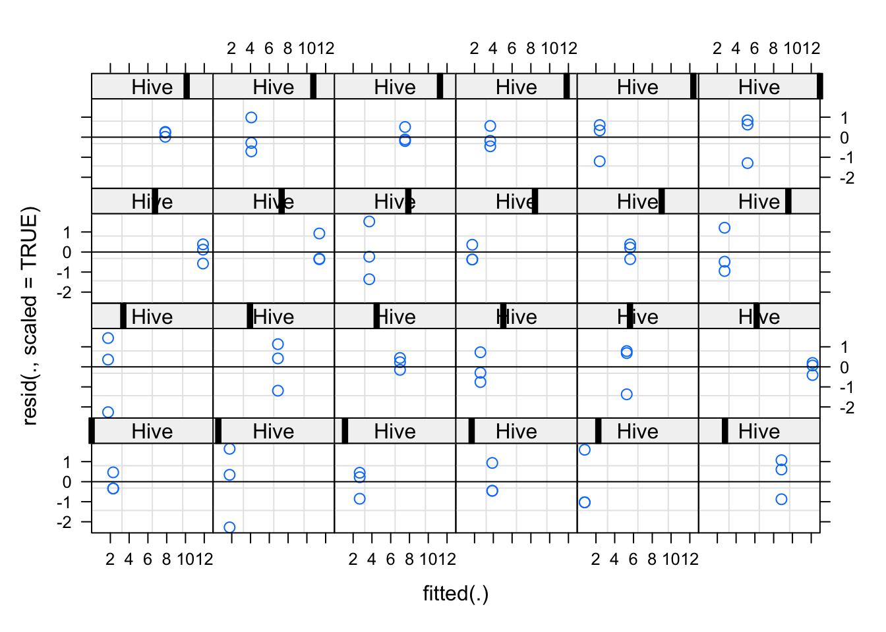